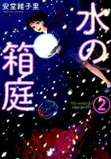
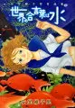
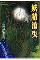

安堂維子里（あんどう いこり）
この人のまんがは数は少ないがおもしろいし、なんとなくセンスがいい（というかセンスは人それぞれなので、自分の波長にあうって感じかな）。今は本が多すぎて探さないとどこにあるかわからなくなっている。整理して読み直したい。
魂を蝶にして保管する発想はすごい。現実世界でも魂というものがデータとして扱えるかもしれないという考えが出てきているので、この人の感覚は先取りしていたのかもしれない。すごい
どの業界にもあるかもしれないが、もっと評価されていい人
バタフライ・ストレージ
水の箱庭

02TBD
世界の合言葉は水

01TBD
特蝶 死局特殊蝶犯罪対策室
妖精消失

01TBD
データベース
| タイトル | ISBN | 絵 | 作 | 発行 | URL | 紙 | 電子 | その他1 | その他2 |
|---|---|---|---|---|---|---|---|---|---|
| バタフライ・ストレージ 1 | 9784199505379 | 安堂維子里 | 徳間書店 | url | Y | 2400 | |||
| バタフライ・ストレージ 2 | 9784199505737 | 安堂維子里 | 徳間書店 | url | Y | 3205 | |||
| バタフライ・ストレージ 3 | 9784199506413 | 安堂維子里 | 徳間書店 | url | Y | 3487 | |||
| バタフライ・ストレージ 4 | 9784199506420 | 安堂維子里 | 徳間書店 | url | Y | 3488 | |||
| 水の箱庭（1） | 9784832234109 | 安堂維子里 | 芳文社 | url | Y | 2773 | |||
| 水の箱庭（2） | 9784832234376 | 安堂維子里 | 芳文社 | url | Y | 3221 | |||
| 世界の合言葉は水 | 9784199501715 | 安堂維子里 | 徳間書店 | url | Y | 2496 | |||
| 特蝶 死局特殊蝶犯罪対策室 1 | 9784785964443 | 安堂 維子里 | 少年画報社 | url | Y | 3223 | |||
| 特蝶 死局特殊蝶犯罪対策室 2 | 9784785967642 | 安堂 維子里 | 少年画報社 | url | Y | 3300 | |||
| 妖精消失 | 9784199502316 | 安堂維子里 | 徳間書店 | url | Y | 2705 |